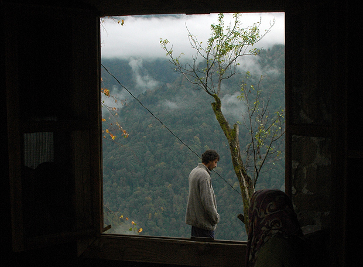

09年过去一半，看了一堆烂片，好像再也找不回去年看电影惊喜不断的感觉。这个暑假，尽管也是大片扎堆，闹腾得轰轰烈烈，却难再有去年《黑暗骑士》那样的经典。 在某个阴霾却仍然闷热的周六，冷冷清清地看完这部冷冷清清的土耳其文艺片《秋》，结尾的字幕打出“谨以此片献给那些在浮躁的年代，不曾追梦的孩子们”，心里一阵压抑，却又很快被结尾简单清亮的音符舒解，取而代之的是被沉静下来，有些深沉却敏感的情绪。
我猜想导演一定有过和主人公相似的经历，那么细腻的呈现年少时追求自由与民主的政治激情，在10年的牢狱生涯中慢慢磨蚀，然后一身疾病归乡，陪伴他的只有年迈的母亲，静止的大山，和宛若游丝的激情。很难讲这样的人生是正确还是错误，只是它有它特有的时代烙印，而且也尝尽了激情与归隐的双重生活，不失为一种完美。也许只有经历过那些大梦想的激情，才能真正学会在朝夕变幻的岁月里保持一颗沉静超然的心。我猜想导演只是想最真实地去再现这样一种被浮躁的年代早已遗忘的人生，为我们这些在浮躁年代生长的孩子，呈现另一种闻所未闻，见所未见的生命状态，尝试用沉静的心去阅读另一种可能。 清晰地记得里面的两扇窗户。一扇窗是在男主角的家里，窗外静止的大山，从绿色变得逐渐萧瑟，再到冬天满山白雪皑皑；另一扇窗是在女孩的房间，窗外是潮汐起伏的大海，涨涨落落，却一直是灰蓝一尘不变的色调。 我家窗外虽然是一棵大树，却依然阴霾，似乎所有的生机都被这桑拿天吞噬，天气预报说会有中到大雨，大概还在酝酿。